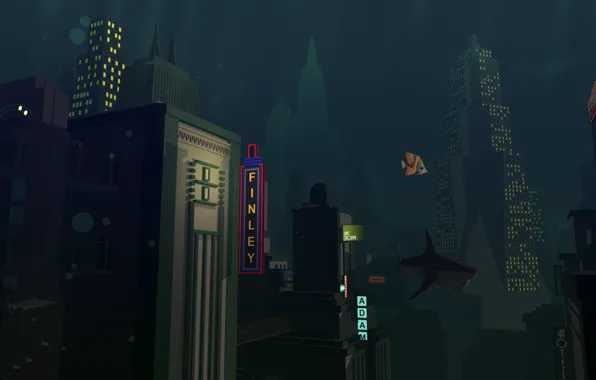

¿De que trata?
Bioshock es una saga de videojuegos de aventura y FPS cuyo propietario actual es 2K Games y que actualmente cuenta con un total de 8 juegos para PS5, Xbox Series X/S, Switch, PS4, Xbox One, iPhone, PS3, PC y Xbox 360.
Los videojuegos de esta saga suelen combinar la aventura y los juegos de disparos en primera persona con ciertos elementos de los juegos de rol ofreciendo a los jugadores una ambientación retrofuturista muy cuidada en todos sus aspectos.
¿Como inicio?
La saga fue creada por 2K Boston (que posteriormente se conoció como Ghost Story Games) bajo la dirección de Ken Levine, debutando en el año 2007 con su primera entrega que ya logró conquistar a la crítica y a los jugadores.

Lista de juegos
Enlace para ver la historia de los juegos principales y sus personajes